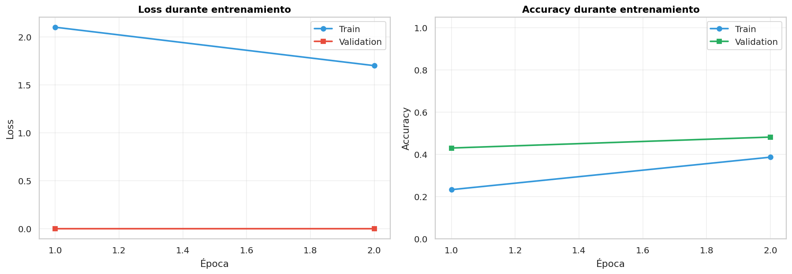
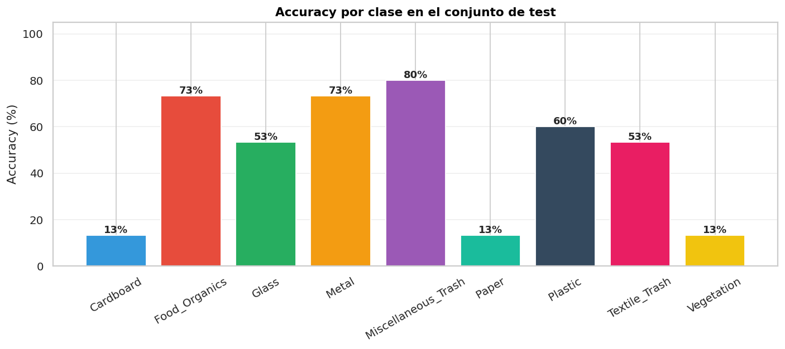

Resumen
Modelo CNN entrenado y funcionando. MobileNetV2 + Transfer Learning + Fine-tuning logra 48,1 % accuracy y F1 macro 0,459 sobre 96 imágenes test (× 4,3 mejor que random).
48,1 %Accuracy
0,459F1 macro
× 4,3vs random
~9 MBModelo final
Pipeline implementado
- Carga con
ImageFolder(9 clases). - Augmentación: flips, rotaciones, color jitter.
- MobileNetV2 ImageNet → custom classifier (Dropout + 64-FC + 9-FC).
- Entrenamiento 2 fases: frozen (LR=1e-3) + fine-tuning (LR=1e-4).
- Persistencia:
models/best_model_waste.pt(~9 MB).
Curvas de entrenamiento

Resultados por clase
| Clase | F1 |
|---|---|
| Food Organics ⭐ | 0,76 |
| Metal | 0,67 |
| Textile Trash | 0,62 |
| Glass | 0,52 |
| Plastic | 0,51 |
| Misc Trash | 0,39 |
| Paper | 0,24 |
| Cardboard | 0,24 |
| Vegetation | 0,20 |

Decisiones justificadas
| Decisión | Motivo |
|---|---|
| MobileNetV2 | 5× más liviano que ResNet, corre en CPU |
| 64×64 px | Velocidad CPU; suficiente detalle para residuos |
| Transfer Learning | Solo 384 train; from-scratch necesitaría miles |
| WeightedRandomSampler | Train tenía clases con 35 vs 65 imgs |
| 4 épocas (2+2) | Más épocas saturaban — empezaba overfitting |